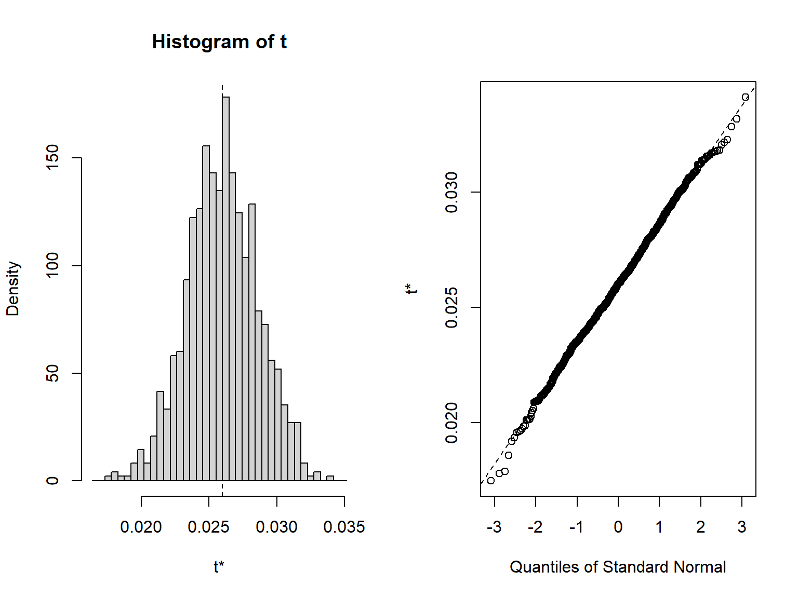
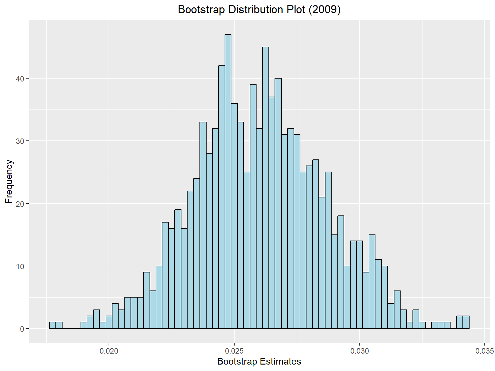
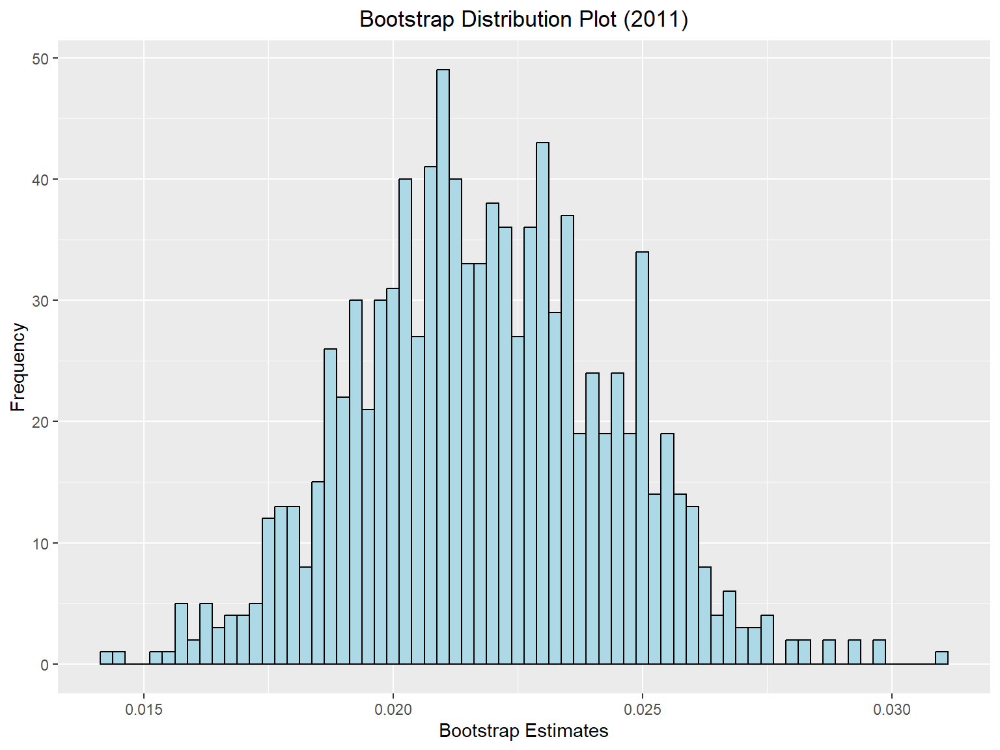

A lovely light-hearted survey and sampling analysis that felt like absolute hell but was an important learning curve.
Disclosure
It is against the academic policy to share the projects and content from our courses. Therefore, I have redacted a lot, and have shown the highlights of what was done.
This project was done in the Spring 2023 term with immense help from one other peer. The goal of this project was to take a public health concern that can be generalized to the total U.S. population and create various sampling techniques to gather population proportion estimates during two separate time periods, then to assess if there is an association between one or more auxiliary variables and our response variable. We chose to run an analysis on accidental injuries and/or poisonings in the year 2009 and 2011, which is one year before and after the first wave of the Affordable Care Act was implemented. Our goal was to see if the population proportion of those who sought care for an accidental injury or poisoning were greater after the ACA implementation compared to prior.
The data used is from the IPUMS Health Survey database.
Main Dataset
Use of data from IPUMS NHIS is subject to conditions including that users
should cite the data appropriately. Use command `ipums_conditions()` for more
details.[1] 190321 32 [1] "YEAR" "SERIAL" "NUMPREC" "QUARTER" "STRATA"
[6] "PSU" "NHISHID" "HHWEIGHT" "FAMNUMTOT" "REGION"
[11] "PERNUM" "NHISPID" "HHX" "FMX" "PX"
[16] "PERWEIGHT" "SAMPWEIGHT" "FWEIGHT" "ASTATFLG" "CSTATFLG"
[21] "AGE" "SEX" "RACENEW" "EMPSTATWKYR" "POORYN"
[26] "INCFAM07ON" "HINOTCOVE" "INJURY3MO" "INJURY3MONO" "LANY"
[31] "FLANY" "HEARING" Re-Coding Response Variable: INJURY
Proportions of Injuries for 2009 and 2011
[1] 2099[1] 2607[1] 0.02373199[1] 0.02559018Determining Sufficient Sample Size
[1] 1000[1] 0.024[1] 3459[1] 3064Simple Random Sample
mean SE
INJURY 0.02573 0.0026 2.5 % 97.5 %
INJURY 0.0205571 0.03090286 variance SE
INJURY 0.025075 0.0025 mean SE
INJURY 0.026762 0.0029 2.5 % 97.5 %
INJURY 0.02113361 0.0323912 variance SE
INJURY 0.026055 0.0027Chi-Squared Test for Association
YEAR
INJURY 2009 2011
0 45694.162 46572.321
1 1206.760 1280.661 YEAR
INJURY 2009 2011
0 45694 46572
1 1207 1281
Pearson's X^2: Rao & Scott adjustment
data: svychisq(~INJURY + YEAR, design = srs.des.merge, statistic = "Chisq")
X-squared = 0.067992, df = 1, p-value = 0.7873Post-Stratify QUARTER on SRS
2.5 % 97.5 %
INJURY 0.02049483 0.03082097 variance SE
INJURY 0.025007 0.0025 mean SE
INJURY 0.02655 0.0029 2.5 % 97.5 %
INJURY 0.02096167 0.03213899 variance SE
INJURY 0.025854 0.0027Chi-Squared Test for Association
YEAR
INJURY 2009 2011
0 86176.661 99170.185
1 2269.339 2704.815 YEAR
INJURY 2009 2011
0 86177 99170
1 2269 2705
Pearson's X^2: Rao & Scott adjustment
data: svychisq(~INJURY + YEAR, design = post_strat.des.merge, statistic = "Chisq")
X-squared = 0.050773, df = 1, p-value = 0.8146Post-Stratify REGION on SRS
mean SE
INJURY 0.025812 0.0027 2.5 % 97.5 %
INJURY 0.02061612 0.03100836 variance SE
INJURY 0.025153 0.0025 mean SE
INJURY 0.026787 0.0029 2.5 % 97.5 %
INJURY 0.02114993 0.03242353 variance SE
INJURY 0.026078 0.0027Chi-Squared Test for Association
YEAR
INJURY 2009 2011
0 86163.011 99146.102
1 2282.989 2728.898 YEAR
INJURY 2009 2011
0 86163 99146
1 2283 2729
Pearson's X^2: Rao & Scott adjustment
data: svychisq(~INJURY + YEAR, design = post_strat.des.merge, statistic = "Chisq")
X-squared = 0.060097, df = 1, p-value = 0.7995Stratified Sampling by Region
Proportional Allocation
1 2 3 4
14458 18093 32308 23587
1 2 3 4
565 708 1264 922 [1] 3459 mean SE
INJURY 0.023418 0.0025 2.5 % 97.5 %
INJURY 0.01847843 0.02835826 variance SE
INJURY 0.022877 0.0024
1 2 3 4
15835 20988 36672 28380
1 2 3 4
476 631 1103 854 [1] 3064 mean SE
INJURY 0.026437 0.0029 2.5 % 97.5 %
INJURY 0.0208506 0.03202405 variance SE
INJURY 0.025747 0.0027Chi-Squared Test of Association
YEAR
INJURY 2009 2011
0 86374.741 99181.698
1 2071.259 2693.302 YEAR
INJURY 2009 2011
0 86375 99182
1 2071 2693
Pearson's X^2: Rao & Scott adjustment
data: svychisq(~INJURY + YEAR, design = prop.alloc.merge.des, statistic = "Chisq")
X-squared = 0.60592, df = 1, p-value = 0.4175Optimal Allocation
REGION x num_total denom pi_h
1 1 0.1506692 14458 13451.54 0.1619425
2 2 0.1621666 18093 13451.54 0.2181224
3 3 0.1524347 32308 13451.54 0.3661187
4 4 0.1447501 23587 13451.54 0.2538164
1 2 3 4
561 755 1267 878
1 2 3 4
14458 18093 32308 23587 mean SE
INJURY 0.024233 0.0026 2.5 % 97.5 %
INJURY 0.01921315 0.029253 variance SE
INJURY 0.023653 0.0024 REGION x num_total denom pi_h
1 1 0.1559617 15835 16084.89 0.1535387
2 2 0.1629639 20988 16084.89 0.2126396
3 3 0.1568058 36672 16084.89 0.3575020
4 4 0.1566093 28380 16084.89 0.2763197
1 2 3 4
459 641 1072 894
1 2 3 4
15835 20988 36672 28380 mean SE
INJURY 0.025067 0.0028 2.5 % 97.5 %
INJURY 0.01961731 0.03051754 variance SE
INJURY 0.024447 0.0026Chi-Squared Test of Association
YEAR
INJURY 2009 2011
0 86302.682 99321.256
1 2143.318 2553.744 YEAR
INJURY 2009 2011
0 86303 99321
1 2143 2554
Pearson's X^2: Rao & Scott adjustment
data: svychisq(~INJURY + YEAR, design = opt.alloc.merge.des, statistic = "Chisq")
X-squared = 0.046957, df = 1, p-value = 0.822Stratified Sampling by Quarter
Proportional Allocation
1 2 3 4
9443 23093 22375 33535
1 2 3 4
369 903 875 1312 [1] 3459 mean SE
INJURY 0.024616 0.0026 2.5 % 97.5 %
INJURY 0.01954614 0.02968686 variance SE
INJURY 0.024017 0.0025
1 2 3 4
25032 26944 25325 24574
1 2 3 4
753 811 762 739 [1] 3065 mean SE
INJURY 0.027158 0.0029 2.5 % 97.5 %
INJURY 0.02147682 0.03283926 variance SE
INJURY 0.026429 0.0027Chi-Squared Test of Association
YEAR
INJURY 2009 2011
0 86354.346 99310.055
1 2179.391 2772.358 YEAR
INJURY 2009 2011
0 86354 99310
1 2179 2772
Pearson's X^2: Rao & Scott adjustment
data: svychisq(~INJURY + YEAR, design = prop.alloc.merge.des, statistic = "Chisq")
X-squared = 0.41427, df = 1, p-value = 0.5037One-Stage Sample
\[w_{h} = \frac{N_h}{n_h} , \ \text{where} \ h \ \text{is strata level}\]
\[w_{q} = \frac{N_q}{n_q} , \ \\ \text{where} \ q \ \text{is quarter level (1,2,3,4)}\]
1 2 3 4
231 295 517 341
1 2 3 4
14458 18093 32308 23587
1 2 3 4
586 774 1332 1017 mean SE DEff
INJURY 0.0259459 0.0026497 1.0752 2.5 % 97.5 %
INJURY 0.02075261 0.0311392 mean SE DEff
INJURY 0.0259907 0.0027147 1.1267 2.5 % 97.5 %
INJURY 0.02066994 0.0313114 variance SE
INJURY 0.025322 0.0026# A tibble: 15 × 2
# Groups: Hi [15]
Hi n
<int> <int>
1 1 8900
2 2 10695
3 3 5422
4 4 4943
5 5 2350
6 6 929
7 7 375
8 8 119
9 9 65
10 10 31
11 11 12
12 12 11
13 13 2
14 14 1
15 18 1< table of extent 0 >
1 2 3 4
15835 20988 36672 28380
1 2 3 4
518 668 1101 910 mean SE DEff
INJURY 0.0218777 0.0025377 0.993
1 2 3 4
25032 26944 25325 24574 mean SE
INJURY 0.021791 0.0026 2.5 % 97.5 %
INJURY 0.01668022 0.02690275 variance SE
INJURY 0.021323 0.0025Chi-Squared Test of Association
YEAR
INJURY 2009 2011
0 86147.230 99654.992
1 2298.770 2220.008 YEAR
INJURY 2009 2011
0 86147 99655
1 2299 2220
Pearson's X^2: Rao & Scott adjustment
data: svychisq(~INJURY + YEAR, design = mult.post.des.merge, statistic = "Chisq")
X-squared = 1.3069, df = 1, p-value = 0.2668Bootstrap Variance Estimates
mean SE
INJURY 0.025995 0.0027 mean SE
INJURY 0.021789 0.0026[1] 0.02600201
BOOTSTRAP CONFIDENCE INTERVAL CALCULATIONS
Based on 1000 bootstrap replicates
CALL :
boot.ci(boot.out = bootstrap_results09, type = "basic")
Intervals :
Level Basic
95% ( 0.0208, 0.0310 )
Calculations and Intervals on Original Scale mean SE
INJURY 0.025946 0.0027 mean SE lb ub
0.02602866 0.00379972 0.02097091 0.03107365 
mean SE lb ub
0.021843967 0.003592572 0.017039251 0.026781728 
Intraclass Correlation (ICC) Within Households
Df Sum Sq Mean Sq F value Pr(>F)
as.factor(NHISHID) 1383 40.69 0.02942 1.295 2.67e-08 ***
Residuals 2325 52.82 0.02272
---
Signif. codes: 0 '***' 0.001 '**' 0.01 '*' 0.05 '.' 0.1 ' ' 1$ICC
[1] 0.09920881
$LowerCI
[1] 0.0627486
$UpperCI
[1] 0.1365643
$N
[1] 1384
$k
[1] 2.679248
$varw
[1] 0.02271941
$vara
[1] 0.002502206 icc.samp.ICC icc.samp.LowerCI icc.samp.UpperCI
1 0.09920881 0.0627486 0.1365643 Df Sum Sq Mean Sq F value Pr(>F)
as.factor(NHISHID) 1226 28.09 0.02292 1.118 0.0145 *
Residuals 1970 40.37 0.02049
---
Signif. codes: 0 '***' 0.001 '**' 0.01 '*' 0.05 '.' 0.1 ' ' 1 icc.samp.ICC icc.samp.LowerCI icc.samp.UpperCI
1 0.04337345 0.004368684 0.08356196Ratio Estimation
Simple Random Sample - Quarter
Assessing proportion of injuries per year by quarter
QUARTER
1 2.904529$total
as.numeric(QUARTER)
INJURY 0.02540821
$se
as.numeric(QUARTER)
INJURY 0.002608762[1] 0.02540821 0.02029503 0.03052138 QUARTER
1 2.48531$total
as.numeric(QUARTER)
INJURY 0.02640864
$se
as.numeric(QUARTER)
INJURY 0.002838812[1] 0.02640864 0.02084457 0.03197271Simple Random Sample - Age
Assessing proportion of injuries per year by age
$total
AGE
INJURY 0.02571345
$se
AGE
INJURY 0.002650076[1] 0.02571345 0.02051930 0.03090760$total
AGE
INJURY 0.02663461
$se
AGE
INJURY 0.002869556[1] 0.02663461 0.02101028 0.03225894Simple Random Sample - Sex
Assessing proportion of injuries per year by sex
$total
SEX
INJURY 0.02569184
$se
SEX
INJURY 0.00264173[1] 0.02569184 0.02051404 0.03086963$total
SEX
INJURY 0.02650775
$se
SEX
INJURY 0.002852794[1] 0.02650775 0.02091628 0.03209923Simple Random Sample - Race
Assessing proportion of injuries per year by race
$total
RACENEW
INJURY 0.02582102
$se
RACENEW
INJURY 0.002667604[1] 0.02582102 0.02059251 0.03104952$total
RACENEW
INJURY 0.02666452
$se
RACENEW
INJURY 0.00287207[1] 0.02666452 0.02103526 0.03229378Simple Random Sample - Above/Below Poverty Line
Assessing proportion of injuries per year by status of being above or below the poverty line
$total
POORYN
INJURY 0.02580386
$se
POORYN
INJURY 0.00270671[1] 0.02580386 0.02049871 0.03110901$total
POORYN
INJURY 0.02663204
$se
POORYN
INJURY 0.002913605[1] 0.02663204 0.02092137 0.03234270Simple Random Sample - Age + Sex + Race
Assessing proportion of injuries per year by age, sex and race
$total
AGE SEX RACENEW
1 0.02571345 0.6044988 0.02582102
$se
AGE SEX RACENEW
1 0.002650076 0.06215682 0.002667604$AGE
[1] 0.02571345
$SEX
[1] 0.6044988
$RACENEW
[1] 0.02582102
$AGE
[1] 0.0205193
$SEX
[1] 0.4826714
$RACENEW
[1] 0.02059251
$AGE
[1] 0.0309076
$SEX
[1] 0.7263261
$RACENEW
[1] 0.03104952$total
AGE SEX RACENEW
1 0.02627255 0.6230714 0.02633119
$se
AGE SEX RACENEW
1 0.002830548 0.06705564 0.002836167$AGE
[1] 0.02627255
$SEX
[1] 0.6230714
$RACENEW
[1] 0.02633119
$AGE
[1] 0.02072467
$SEX
[1] 0.4916424
$RACENEW
[1] 0.0207723
$AGE
[1] 0.03182042
$SEX
[1] 0.7545005
$RACENEW
[1] 0.03189008Ratio Estimation
Main Sampling Design - Age
Post-stratify by age
$total
AGE
INJURY 0.02741572
$se
AGE
INJURY 0.002892153[1] 0.02741572 0.02174710 0.03308434 AGE
INJURY 6.580796e-09$total
AGE
INJURY 0.02222087
$se
AGE
INJURY 0.00267332[1] 0.02222087 0.01698117 0.02746058 AGE
INJURY 5.470782e-09
2-sample test for equality of proportions with continuity correction
data: c(x1 * n1, x2 * n2) out of c(n1, n2)
X-squared = 1.6931, df = 1, p-value = 0.1932
alternative hypothesis: two.sided
95 percent confidence interval:
-0.002425969 0.012815669
sample estimates:
prop 1 prop 2
0.02741572 0.02222087 [1] 1.301192Main Sampling Design - Sex
Post-stratify by sex
$total
SEX
INJURY 0.02610033
$se
SEX
INJURY 0.002737903[1] 0.02610033 0.02073404 0.03146662 SEX
INJURY 3.264921e-06$total
SEX
INJURY 0.02612651
$se
SEX
INJURY 0.002740649[1] 0.02612651 0.02075483 0.03149818 SEX
INJURY 3.264921e-06Main Sampling Design - Race
Post-stratify by race
$total
RACENEW
INJURY 0.02532012
$se
RACENEW
INJURY 0.002692587[1] 0.02532012 0.02004265 0.03059759 RACENEW
INJURY 3.28981e-10$total
RACENEW
INJURY 0.02564065
$se
RACENEW
INJURY 0.002726672[1] 0.02564065 0.02029637 0.03098493 RACENEW
INJURY 3.28981e-10Main Sampling Design - Above/Below Poverty Line
_Post-stratify by poverty status of being above or below the poverty line__
$total
POORYN
INJURY 0.02568653
$se
POORYN
INJURY 0.00287087[1] 0.02568653 0.02005962 0.03131343 POORYN
INJURY 1.819397e-06$total
POORYN
INJURY 0.02271839
$se
POORYN
INJURY 0.002917812[1] 0.02271839 0.01699948 0.02843730 POORYN
INJURY 1.916214e-06
2-sample test for equality of proportions with continuity correction
data: c(x1 * n1, x2 * n2) out of c(n1, n2)
X-squared = 0.030396, df = 1, p-value = 0.8616
alternative hypothesis: two.sided
95 percent confidence interval:
-0.008809279 0.006884459
sample estimates:
prop 1 prop 2
0.02568653 0.02664894 [1] 0.1743445Main Sampling Design - Age + Sex + Race
Post-stratify by age, sex and race
$total
AGE SEX RACENEW
1 0.02571345 0.6044988 0.02582102
$se
AGE SEX RACENEW
1 0.002650076 0.06215682 0.002667604$AGE
[1] 0.02571345
$SEX
[1] 0.6044988
$RACENEW
[1] 0.02582102
$AGE
[1] 0.0205193
$SEX
[1] 0.4826714
$RACENEW
[1] 0.02059251
$AGE
[1] 0.0309076
$SEX
[1] 0.7263261
$RACENEW
[1] 0.03104952 AGE SEX RACENEW
INJURY 5.525261e-09 3.03958e-06 3.229045e-10$total
AGE SEX RACENEW
1 0.02627255 0.6230714 0.02633119
$se
AGE SEX RACENEW
1 0.002830548 0.06705564 0.002836167$AGE
[1] 0.02627255
$SEX
[1] 0.6230714
$RACENEW
[1] 0.02633119
$AGE
[1] 0.02072467
$SEX
[1] 0.4916424
$RACENEW
[1] 0.0207723
$AGE
[1] 0.03182042
$SEX
[1] 0.7545005
$RACENEW
[1] 0.03189008 AGE SEX RACENEW
INJURY 6.303432e-09 3.537583e-06 3.650019e-10Regression Estimation
Simple Random Sample - Quarter
Model based population estimates by quarter
Call:
svyglm(formula = INJURY ~ as.numeric(QUARTER), design = srs.des.2009,
family = "binomial")
Survey design:
svydesign(id = ~1, data = srs.2009, fpc = ~rep(N.2009, n.2009))
Coefficients:
Estimate Std. Error t value Pr(>|t|)
(Intercept) -3.84276 0.35445 -10.842 <2e-16 ***
as.numeric(QUARTER) 0.07015 0.11244 0.624 0.533
---
Signif. codes: 0 '***' 0.001 '**' 0.01 '*' 0.05 '.' 0.1 ' ' 1
(Dispersion parameter for binomial family taken to be 1.000662)
Number of Fisher Scoring iterations: 6 link SE
1 -3.639 0.106as.numeric(QUARTER)
1.072666 2.5 % 97.5 %
0.8604348 1.3372463
Call:
svyglm(formula = INJURY ~ as.numeric(QUARTER), design = srs.des.2011,
family = "binomial")
Survey design:
svydesign(id = ~1, data = srs.2011, fpc = ~rep(N.2011, n.2011))
Coefficients:
Estimate Std. Error t value Pr(>|t|)
(Intercept) -3.76764 0.26491 -14.222 <2e-16 ***
as.numeric(QUARTER) 0.06805 0.09283 0.733 0.464
---
Signif. codes: 0 '***' 0.001 '**' 0.01 '*' 0.05 '.' 0.1 ' ' 1
(Dispersion parameter for binomial family taken to be 0.9998915)
Number of Fisher Scoring iterations: 6 link SE
1 -3.5985 0.1107as.numeric(QUARTER)
1.070422 2.5 % 97.5 %
0.8922825 1.2841250 Simple Random Sample - Age
Model based population estimates by age
Call:
svyglm(formula = INJURY ~ AGE, design = srs.des.2009, family = "binomial")
Survey design:
svydesign(id = ~1, data = srs.2009, fpc = ~rep(N.2009, n.2009))
Coefficients:
Estimate Std. Error t value Pr(>|t|)
(Intercept) -3.676261 0.205173 -17.918 <2e-16 ***
AGE 0.001175 0.004860 0.242 0.809
---
Signif. codes: 0 '***' 0.001 '**' 0.01 '*' 0.05 '.' 0.1 ' ' 1
(Dispersion parameter for binomial family taken to be 1.000313)
Number of Fisher Scoring iterations: 6 link SE
1 -3.6344 0.1053 AGE
1.001175 2.5 % 97.5 %
0.9916805 1.0107609
Call:
svyglm(formula = INJURY ~ AGE, design = srs.des.2011, family = "binomial")
Survey design:
svydesign(id = ~1, data = srs.2011, fpc = ~rep(N.2011, n.2011))
Coefficients:
Estimate Std. Error t value Pr(>|t|)
(Intercept) -3.722900 0.214296 -17.373 <2e-16 ***
AGE 0.003479 0.004835 0.719 0.472
---
Signif. codes: 0 '***' 0.001 '**' 0.01 '*' 0.05 '.' 0.1 ' ' 1
(Dispersion parameter for binomial family taken to be 1.000282)
Number of Fisher Scoring iterations: 6 link SE
1 -3.5972 0.1106 AGE
1.003485 2.5 % 97.5 %
0.9940159 1.0130444 Simple Random Sample - Sex
Model based population estimates by sex
link SE
1 -3.64 0.1059 SEX
0.7916548 2.5 % 97.5 %
0.5232267 1.1977930 link SE
1 -3.6017 0.1112 SEX
0.718863 2.5 % 97.5 %
0.4655596 1.1099848 Simple Random Sample - Race
Model based population estimates by race
link SE
1 -3.6368 0.1056 RACENEW
0.9992693 2.5 % 97.5 %
0.9970198 1.0015239 Independent Sampling design
svydesign(id = ~1, data = srs.2011, fpc = ~rep(N.2011, n.2011))
Call: svyglm(formula = INJURY ~ RACENEW, design = srs.des.2011, family = "binomial")
Coefficients:
(Intercept) RACENEW
-3.797418 0.001288
Degrees of Freedom: 3063 Total (i.e. Null); 3062 Residual
Null Deviance: 755.6
Residual Deviance: 753.8 AIC: 757.8 link SE
1 -3.6038 0.1113 RACENEW
1.001289 2.5 % 97.5 %
0.9994387 1.0031420 Simple Random Sample - Above/Below Poverty
Model based population estimates by status of being above or below poverty line
link SE
1 -3.6408 0.1061 POORYN
0.9539852 2.5 % 97.5 %
0.8696225 1.0465321 Independent Sampling design
svydesign(id = ~1, data = srs.2011, fpc = ~rep(N.2011, n.2011))
Call: svyglm(formula = INJURY ~ POORYN, design = srs.des.2011, family = "binomial")
Coefficients:
(Intercept) POORYN
-3.606859 0.006189
Degrees of Freedom: 3063 Total (i.e. Null); 3062 Residual
Null Deviance: 755.6
Residual Deviance: 755.6 AIC: 759.6 link SE
1 -3.5938 0.1103 POORYN
1.006208 2.5 % 97.5 %
0.9272497 1.0918892 Regression Estimation
Main Sampling Design - Age
Model based population estimates on a post-stratified design, by age
Call:
svyglm(formula = INJURY ~ AGE, design = post_strat_des_2009)
Survey design:
svydesign(ids = ~NHISHID, fpc = ~Mi, strata = ~REGION, weights = ~post_strat_weight +
w2, data = post_merge_2009, nest = T)
Coefficients:
Estimate Std. Error t value Pr(>|t|)
(Intercept) 0.0198644 0.0046520 4.270 2.09e-05 ***
AGE 0.0001814 0.0001300 1.395 0.163
---
Signif. codes: 0 '***' 0.001 '**' 0.01 '*' 0.05 '.' 0.1 ' ' 1
(Dispersion parameter for gaussian family taken to be 0.02531078)
Number of Fisher Scoring iterations: 2 2.5 % 97.5 %
1 0.02087369 0.03178631 2.5 % 97.5 %
1 0.01676609 0.02705727
2-sample test for equality of proportions with continuity correction
data: c(x1 * n1, x2 * n2) out of c(n1, n2)
X-squared = 0.0013179, df = 1, p-value = 0.971
alternative hypothesis: two.sided
95 percent confidence interval:
-0.008329021 0.007465021
sample estimates:
prop 1 prop 2
0.026330 0.026762 [1] 0.03630289Stratified 1 - level Cluster Sampling design
With (2611) clusters.
postStratify(design = mult.post.des.merge, strata = ~strata_var,
population = table)
Call: svyglm(formula = INJURY ~ as.factor(YEAR), design = mult.post.des.merge)
Coefficients:
(Intercept) as.factor(YEAR)2011
0.025991 -0.004199
Degrees of Freedom: 6905 Total (i.e. Null); 2602 Residual
Null Deviance: 160.1
Residual Deviance: 160 AIC: -6296Stratified 1 - level Cluster Sampling design
With (2611) clusters.
postStratify(design = mult.post.des.merge, strata = ~strata_var,
population = table)
Call: svyglm(formula = INJURY ~ as.factor(YEAR) + AGE, design = mult.post.des.merge)
Coefficients:
(Intercept) as.factor(YEAR)2011 AGE
0.0199882 -0.0044897 0.0001776
Degrees of Freedom: 6905 Total (i.e. Null); 2601 Residual
Null Deviance: 160.1
Residual Deviance: 159.9 AIC: -6299
Call:
svyglm(formula = INJURY ~ as.factor(YEAR) + AGE, design = mult.post.des.merge)
Survey design:
postStratify(design = mult.post.des.merge, strata = ~strata_var,
population = table)
Coefficients:
Estimate Std. Error t value Pr(>|t|)
(Intercept) 1.999e-02 3.628e-03 5.510 3.94e-08 ***
as.factor(YEAR)2011 -4.490e-03 3.768e-03 -1.192 0.234
AGE 1.776e-04 8.372e-05 2.121 0.034 *
---
Signif. codes: 0 '***' 0.001 '**' 0.01 '*' 0.05 '.' 0.1 ' ' 1
(Dispersion parameter for gaussian family taken to be 0.02316281)
Number of Fisher Scoring iterations: 2Main Sampling Design - Sex
Model based population estimates on a post-stratified design, by sex
link SE
1 0.025964 0.0027 2.5 % 97.5 %
1 0.02063257 0.03129533 link SE
1 0.021782 0.0026 2.5 % 97.5 %
1 0.01667449 0.02688884Main Sampling Design - Race
Model based population estimates on a post-stratified design, by race
link SE
1 0.026059 0.0027 2.5 % 97.5 %
1 0.02072449 0.03139273 link SE
1 0.021794 0.0026 2.5 % 97.5 %
1 0.01668064 0.02690746Main Sampling Design - Above/Below Poverty
Model based population estimates on a post-stratified design, by the status of being above or below the poverty line
Call:
svyglm(formula = INJURY ~ POORYN, design = post_strat_des_2009)
Survey design:
svydesign(ids = ~NHISHID, fpc = ~Mi, strata = ~REGION, weights = ~post_strat_weight +
w2, data = post_merge_2009, nest = T)
Coefficients:
Estimate Std. Error t value Pr(>|t|)
(Intercept) 0.0267671 0.0035390 7.563 7.13e-14 ***
POORYN -0.0003585 0.0009269 -0.387 0.699
---
Signif. codes: 0 '***' 0.001 '**' 0.01 '*' 0.05 '.' 0.1 ' ' 1
(Dispersion parameter for gaussian family taken to be 0.02532512)
Number of Fisher Scoring iterations: 2 link SE
1 0.026004 0.0027 link SE
1 0.021613 0.0026[1] 6904Imputation
[1] 0Multivariate Amputed Data Set
Call: ampute(data = prime.samp.2009, patterns = c(1, 0, 1, 1, 1, 1))
Class: mads
Proportion of Missingness: 0.5
Frequency of Patterns: 1
Pattern Matrix:
NHISHID INJURY POORYN QUARTER REGION AGE
1 1 0 1 1 1 1
Mechanism:[1] "MAR"
Weight Matrix:
NHISHID INJURY POORYN QUARTER REGION AGE
1 1 0 1 1 1 1
Type Vector:
[1] "RIGHT"
Odds Matrix:
[,1] [,2] [,3] [,4]
[1,] 1 2 3 4
Head of Amputed Data Set
NHISHID INJURY POORYN QUARTER REGION AGE
1 2009049998 NA 1 4 1 51
2 2009049998 NA 1 4 1 57
3 2009049998 0 1 4 1 18
4 2009034700 NA 1 3 1 48
5 2009034700 0 1 3 1 58
6 2009020900 0 1 2 1 68[1] 1873
iter imp variable
1 1 INJURY
1 2 INJURY
1 3 INJURY
1 4 INJURY
1 5 INJURY
2 1 INJURY
2 2 INJURY
2 3 INJURY
2 4 INJURY
2 5 INJURY
3 1 INJURY
3 2 INJURY
3 3 INJURY
3 4 INJURY
3 5 INJURY
4 1 INJURY
4 2 INJURY
4 3 INJURY
4 4 INJURY
4 5 INJURY
5 1 INJURY
5 2 INJURY
5 3 INJURY
5 4 INJURY
5 5 INJURY[1] 5[1] 3709 6 mean SE
INJURY0 0.962888 0.0032
INJURY1 0.037112 0.0032 mean SE
0.027841301 0.002677817 [1] 0Multivariate Amputed Data Set
Call: ampute(data = prime.samp.2009, patterns = c(1, 0, 1, 1, 1, 1))
Class: mads
Proportion of Missingness: 0.5
Frequency of Patterns: 1
Pattern Matrix:
NHISHID INJURY POORYN QUARTER REGION AGE
1 1 0 1 1 1 1
Mechanism:[1] "MAR"
Weight Matrix:
NHISHID INJURY POORYN QUARTER REGION AGE
1 1 0 1 1 1 1
Type Vector:
[1] "RIGHT"
Odds Matrix:
[,1] [,2] [,3] [,4]
[1,] 1 2 3 4
Head of Amputed Data Set
NHISHID INJURY POORYN QUARTER REGION AGE
1 2009049998 0 1 4 1 51
2 2009049998 NA 1 4 1 57
3 2009049998 NA 1 4 1 18
4 2009034700 NA 1 3 1 48
5 2009034700 0 1 3 1 58
6 2009020900 NA 1 2 1 68[1] 1862
iter imp variable
1 1 INJURY
1 2 INJURY
1 3 INJURY
1 4 INJURY
1 5 INJURY
2 1 INJURY
2 2 INJURY
2 3 INJURY
2 4 INJURY
2 5 INJURY
3 1 INJURY
3 2 INJURY
3 3 INJURY
3 4 INJURY
3 5 INJURY
4 1 INJURY
4 2 INJURY
4 3 INJURY
4 4 INJURY
4 5 INJURY
5 1 INJURY
5 2 INJURY
5 3 INJURY
5 4 INJURY
5 5 INJURY[1] 5[1] 3709 6 mean SE
INJURY0 0.96135 0.0033
INJURY1 0.03865 0.0033 mean SE
0.033891769 0.003051162